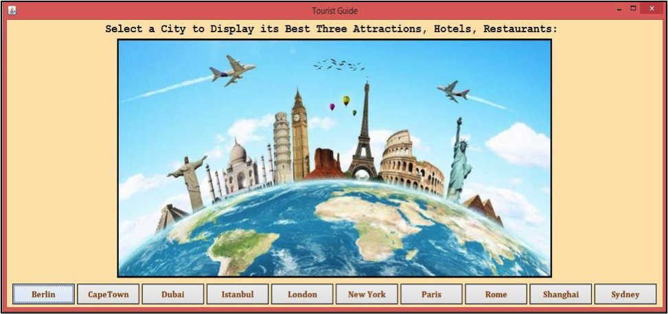

Rsha Talal Mirza
Denver, CO
USA
rsmi9152@colorado.edu
USA
rsmi9152@colorado.edu
Hobby
| Name | Experience |
|---|---|
| swimming | 6 years |
| cooking | 4 years |
Work Experiences
| Demonstrator | King Abdul-Aziza University, Jeddah, Saudi Arabia. |
|---|---|
January 2010 - Present | |
| Programmer | Zahid Tractors Co. Ltd, Jeddah, Saudi Arabia |
June 2007 - January 2010 |
Education
| Degree | School | City | Year |
|---|---|---|---|
| Master Degree in Computer Science (CS) | University of Colorado Boulder | Boulder, Colorado, USA | Expected in May 2015 |
| Certificate of Completion Intensive English Program | University of Denver | Denver, Colorado, USA | 2013 |
| Bachelor Degree in Computer Science (CS) | King Abdulaziz University | Jeddah, Saudi Arabia | 2007 |
Honors
| Year | Honor |
|---|---|
| 2007 | Graduted from King Abdulaziz University with the honor degree |
Portfolio
Build a Tourist Guide Desktop Application
In Software Engineering course: working within a team of three to build a Tourist Guide desktop application that provides users with information about 10 famous cities around the world using Clojure and its concurrency feature.
In User Centered Design course: working within a team of four to design a Food Inspector mobile application that helps shoppers to inspect products and ensure whether or not the products are safe to purchase based on the food restrictions the users set up.
Skills
References
| Name | Job |
|---|---|
| Zainab Saad Ahmed Gabbani | Assistant Professor, King Abdulaziz University |
| Maysoon Abulkhair | Assistant Professor, King Abdulaziz University |